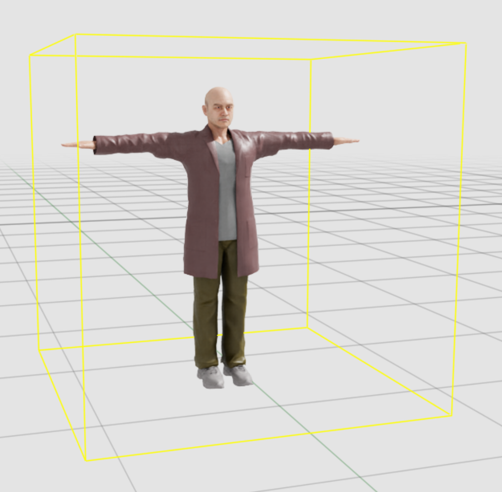
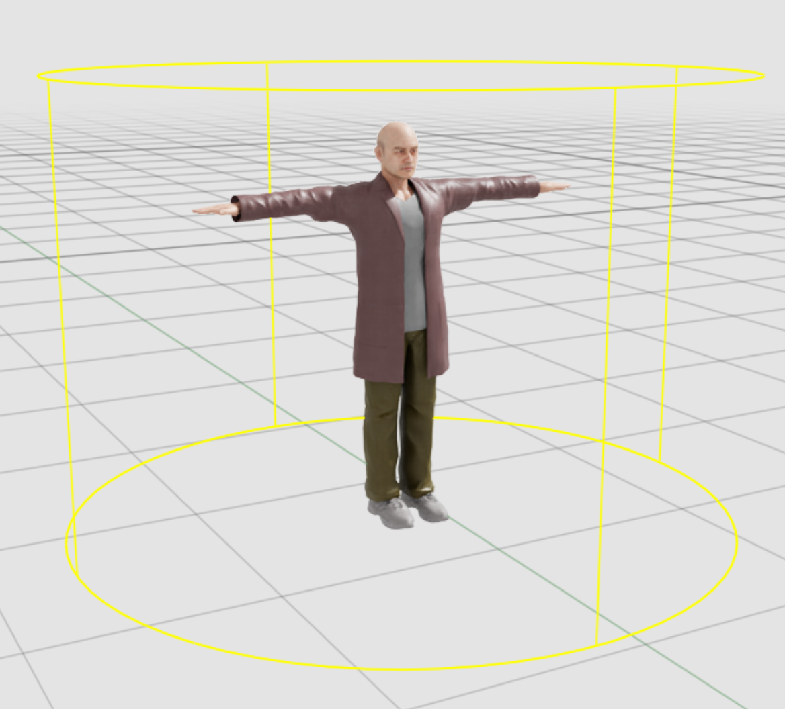

配置文件指南#
本指南介绍如何配置 Isaac Sim Replicator Agent (IRA) 以用于仿真和合成数据生成。配置项用于控制环境、传感器生成与放置、角色/机器人代理、行为以及数据生成。
概念与工作流#
在开始详细配置之前，请先了解 IRA 仿真的一般工作流和关键概念。
工作流程概述#
环境设置：定义仿真发生的静态 3D 环境。
代理和传感器定义：配置角色、机器人和相机（传感器）以填充环境。
行为配置：为参与者分配例程和触发器。例程定义加权随机动作，如行走或空闲。触发器定义对参与者的反应性行为，例如响应碰撞。或者，使用行为树代替例程和触发器来驱动组（实验性功能）。此替代方案为实验性功能，仅适用于角色和机器人组，并可能在未来的版本中发生变化。
数据生成：配置 Replicator 写入器以生成真实数据（RGB、分割）。
关键概念#
环境：为仿真加载的静态 3D 世界（USD 舞台）。它还定义了用于导航的 NavMesh。
智能体（Actors）：场景中的动态实体，可以是角色（Characters）（人类）或机器人（Robots）。
行为（Behaviors）：智能体可以执行的原子动作，例如
wander、patrol或idle。例程（Routines）：分配给智能体组的一组行为集合。智能体根据分配的权重，从该池中随机选择行为。
触发器（Triggers）：用于中断正常例程的条件逻辑。当满足特定条件时（例如特定时间或事件），触发器将按顺序执行其定义的行为列表。触发器序列完成后，智能体将恢复其标准例程，直到另一个触发器被激活。
行为树（Behavior Tree，实验性功能）：例程-触发器系统的替代方案。角色或机器人组指定一个
behavior_treeJSON 资源，而不是routines或triggers。该组的所有逻辑都在树内编写。请参阅 Behavior Tree Character Group (Experimental) 和 Behavior Tree Robot Group (Experimental)。传感器（Sensors）：放置在场景中用于观察仿真的相机。
Replicator：负责渲染帧并将标注数据（真实值）写入磁盘或云存储的系统。
顶层结构#
配置是包含单个根键 isaacsim.replicator.agent 的 YAML 文件：
isaacsim.replicator.agent:
version: 1.7.0
environment: { ... } # required
seed: 123456789 # optional; 32-bit (0..4294967295); autogenerated if omitted
simulation_duration: 60.0 # optional; defaults to 60.0
character: { ... } # optional
robot: { ... } # optional
sensor: { ... } # optional
replicator: { ... } # optional
根参数#
version（必填）：配置架构的语义化版本号（例如，“1.0.0”）。
environment（必填）：定义仿真世界。
seed（可选）：一个 32 位无符号整数（0..4,294,967,295）。 - 用于初始化随机数生成器，以实现确定性仿真（例如，角色生成位置、例行行为变化）。 - 如果省略，系统将基于当前系统时间生成一个种子。
simulation_duration（可选）：模拟的总运行时间，单位为秒（必须 >= 0）。 - 模拟运行时，时间轴的每帧
dt设置为1/30 s，且应用程序的循环速率限制为 30 Hz，从而提供有效的 30 FPS 播放速率。 - 默认为60.0秒。character（可选）：配置人类代理（外观、行为如漫游/巡逻，以及触发器）。
robot（可选）：配置机器人代理（配置路径、行为/命令、数据收集）。
sensor（可选）：使用瞄准目标或最大覆盖等放置策略配置静态相机。
replicator（可选）：配置数据写入器，包括输出目录以及 RGB 和分割等标注器。
快速入门（最小化）#
isaacsim.replicator.agent:
version: 1.7.0
environment:
base_stage_asset_path: "Isaac/Environments/Simple_Warehouse/full_warehouse.usd"
章节#
环境#
定义静态 3D 环境和要加载的其他资产。
base_stage_asset_path（必填）：主 USD 阶段的路径或 URL。 - 支持http(s)://（包括 S3 预签名 URL）、Windows/UNC 路径以及本地文件系统路径。 - 也支持相对于 Isaac Sim Assets 根目录的路径。prop_asset_paths（可选）：作为子层加载到阶段中的其他 USD 资产列表。这有助于在不修改基础环境的情况下添加道具或灯光。支持相对于 Isaac Sim Assets 根目录的路径。
示例：
environment:
base_stage_asset_path: "Isaac/Environments/Simple_Warehouse/full_warehouse.usd"
prop_asset_paths:
- "Isaac/Props/Conveyors/ConveyorBelt_A08.usd"
字符#
定义人类角色组、其外观及其行为。
root_prim_path（可选）：生成角色的根路径（默认值：/World/Characters）。motion_library_path（可选）：自定义动作库文件的路径。支持相对于 Isaac Sim Assets 根目录的路径。默认值：Isaac/People/MotionLibrary/HumanMotionLibrary.usd。groups：角色组字典。
角色组分为两种类型：
BaseCharacterGroup，通过 routine-trigger 系统定义行为。
BehaviorTreeGroup（实验性），接收行为树 JSON 文件。
基础角色组#
组参数#
num（必填）：要生成的角色数量（>= 0）。asset_path（可选）：角色资产的 USD 路径。支持相对于 Isaac Sim Assets 根目录的路径。默认值：Isaac/People/Characters/。spawn_areas（可选）：允许角色生成的 NavMesh 区域名称 列表。如果为空，则在 NavMesh 上的任意位置生成。spawn_positions（可选）：显式的世界空间[x, y, z]位置列表，按索引顺序生效并吸附到 NavMesh。剩余的角色将随机生成。请参阅 Explicit Spawn Positions and Orientations。spawn_orientations（可选）：偏航角列表，单位为度（绕舞台向上轴，从默认朝向测量），按索引顺序生效。请参阅 Explicit Spawn Positions and Orientations。semantic_labels（可选）：用于语义分割的[type, data]对列表。默认值：[["class", "character"]]。routines（可选）：角色执行的行为列表。默认值：[{ wander: {} }]。triggers（可选）：用于中断例程的基于事件的触发器列表。colliders（可选）：在角色下生成的碰撞体列表。
显式生成位置和朝向#
默认情况下，代理在其 spawn_areas 内的随机 NavMesh 位置生成。为了确定性地放置代理（用于可复现或脚本化的场景），请提供 spawn_positions 和/或 spawn_orientations。两者均为按实例的列表，按索引顺序生效，并且适用于角色组和机器人组，包括行为树组。
spawn_positions：世界空间[x, y, z]坐标。实例i放置在spawn_positions[i]处，并吸附到最近的 NavMesh 点。提供的z用于在多层场景中选择楼层。没有对应条目的实例将在spawn_areas内随机生成，并避开已显式分配的位置。spawn_orientations：偏航角，单位为度，从代理相对于舞台上轴的默认朝向开始测量。值为0时保持资产的默认朝向。无论实例是显式放置还是随机生成，朝向设置均生效。
每个列表仅在前 num 个条目内有效。如果列表长度超过 num，多余的条目将被忽略并产生警告。超出列表长度的实例将保持默认行为（随机位置和/或默认朝向）。
注意
仅偏航角（绕舞台上轴的旋转）可配置，这是地面代理有意义的朝向。
示例：
character:
groups:
greeters:
num: 4
spawn_positions: # world-space [x, y, z]; each snapped to the NavMesh
- [3.0, 3.0, 0.0]
- [3.0, -3.0, 0.0]
spawn_orientations: # yaw in degrees, from the default heading
- 225.0
- 135.0
# instances 0 and 1 are pinned and rotated; 2 and 3 spawn randomly with the default heading
行为#
行为在 routines 列表中定义。常见字段：
weight（默认 1）：选择此行为的概率权重。repeat（默认 1）：在选择新行为之前重复此行为的次数。
支持的行为：
wander：随机行走和待机。
walk： -speed_range：[最小值, 最大值] m/s（默认 [1.0, 1.0]）。 -distance_range：[最小值, 最大值] 每次行走段需移动的距离（默认 [5.0, 15.0]）。 -navigation_areas：允许的 NavMesh 区域标签列表。每个条目必须是唯一的非空字符串。idle：待机选项数组。 -animation：动画名称（必须存在于 motion lib 中）。 -time_range：[最小值, 最大值] 持续时间（秒）（默认 [2.0, 5.0]）。 -weight：选择概率。
patrol：沿特定路径巡逻。
speed_range：[最小值, 最大值] m/s（默认 [1.0, 1.0]）。以下选项必须且仅能选择一个（必填）： -
path_points：3D 点列表[[x,y,z], [x,y,z], ...]。 -target_prims：需访问的 prim 路径列表。注意
path_points和target_prims都必须位于 NavMesh 上，且 actor 可到达。
stop：停止并在原地随机待机一段时间。
time_range：[最小值, 最大值] 持续时间（秒）（默认 [5.0, 5.0]）。
碰撞体#
角色可以定义一个 碰撞体 列表，以便在其根节点下生成并附加。将这些碰撞体与 collision_trigger 配对，可使角色在进入或退出其他碰撞体时做出反应。有关详细信息，请参阅下方的“触发器”部分。
当生成以下两种受支持的碰撞体类型之一时，系统会将 PhysicsRigidBodyAPI、PhysicsCollisionAPI 和 PhysxTriggerAPI 应用于碰撞体 prim：
box：来自 UsdGeom.Cube 的碰撞体。
dimension：立方体在 x、y、z 顺序下的尺寸（例如 [1.0, 1.0, 1.0]）。值类型为 Array。
cylinder：来自 UsdGeom.Cylinder 的碰撞体。
radius：圆柱体半径。值类型为 Float。
 尺寸为 2x2x2 的盒碰撞体# |
 半径为 1.5 的圆柱碰撞体# |


每个碰撞体还定义了一个名称，该名称存储为自定义 USD String 属性 metro:collider:name。collision_trigger 字段 self_collider 和 other_colliders 引用此属性以过滤碰撞。
生成的碰撞体会与具有 PhysicsCollisionAPI 的其他碰撞体生成重叠事件。collision_trigger 通过检查它们是否具有自定义 USD String 属性 metro:collider:name 来进一步过滤这些事件。
但是，两个角色之间的碰撞触发不会被检测到，因为 PhysX 不支持两个 PhysxTriggerAPI prim 之间的触发。
在 stage 中预定义碰撞体并向其添加 metro:collider:name，然后在配置文件中配置 colliders 和 collision_trigger。
character:
groups:
Worker:
asset_path: "Isaac/People/Characters/"
num: 10
colliders:
# Spawn a cylinder collider for each worker
- cylinder:
name: worker_collider_0
radius: 1.2
triggers:
# Worker will pause a few seconds when it walks into colliders with name "loading_zone" or "unloading_zone" in stage
- collision_trigger:
self_collider: worker_collider_0
other_colliders: loading_zone;unloading_zone
behavior:
- stop:
time_range: [2.0, 4.0]
触发器#
触发器定义事件，这些事件会中断正常例程以执行一系列反应行为。
每个 actor 可以指定一个要监听的触发器列表。
priority（默认值 1）：较高优先级的触发器会覆盖较低优先级的触发器。必须 >= 1。behavior：触发时按顺序执行的行为列表。
注意
每个触发器变体都是严格的：触发器块内的未知键会导致验证失败。
提示
编写特定的动作序列
Routines 根据权重随机选择行为，因此不适用于确定性序列。如果需要让 Actor 按特定顺序执行动作（例如，走到点 A，待机五秒，然后走到点 B），请改用 trigger。Trigger 的 behavior 列表始终按顺序执行，使其成为脚本序列的正确工具。使用带有 time: 0 的 time_trigger，以便在模拟开始时立即启动序列。
触发器类型：
event_trigger：在命名 carb 事件触发时触发。event：carb 事件名称。值类型为 String；必须非空。
time_trigger：在播放开始后经过特定时间时触发。time：时间（秒）。值类型为 Float；必须 >= 0。
collision_trigger：当此 Actor 上的 collider 与另一个 collider 进入或退出重叠时触发。self_collider：要使用的此 Actor 上的 collider 名称（由组设置中的colliders字段生成）。值类型为 String；必须非空。other_colliders：（可选）要响应的其他 collider 的名称列表，以分号分隔。值类型为 String；默认为""（响应重叠对象上的任意 collider）。trigger_enter：（可选）在进入重叠时触发。值类型为 Boolean。默认为 True。trigger_exit：（可选）在退出重叠时触发。值类型为 Boolean。默认为 False。
提示
从 Python 分发事件
# Send out a custom event named 'my_test_event' import carb carb.eventdispatcher.get_eventdispatcher().dispatch_event(event_name="my_test_event") # Actors spawned by trigger setting will react to `my_test_event`. # triggers: # - event_trigger: # event: my_test_event # priority: 10 # behavior: [...]
示例：
character:
root_prim_path: "/World/Characters"
groups:
warehouse_workers:
asset_path: "Isaac/People/Characters/"
num: 10
spawn_areas: ["warehouse_floor"]
routines:
- wander:
walk:
speed_range: [0.8, 1.5]
distance_range: [5.0, 10.0]
idle:
- animation: look_around
time_range: [2.0, 5.0]
triggers:
- time_trigger:
time: 30.0
priority: 10
behavior:
- patrol: # Move to break room
speed_range: [1.0, 1.2]
target_prims: ["/World/BreakRoom"]
- event_trigger:
event: test_event
priority: 10
behavior:
- patrol:
speed_range: [5.0, 5.5]
path_points:
- [0, 0, 0]
- [0, -5, 0]
# Pause a few seconds when it walks into colliders with name "loading_zone" or "unloading_zone"
- collision_trigger:
self_collider: worker_sensing_collider
other_colliders: loading_zone;unloading_zone
behavior:
- stop:
time_range: [2.0, 4.0]
colliders:
- cylinder:
name: worker_sensing_collider # A collider to represent the sensing range of the worker
radius: 10.0
行为树角色组（实验性）#
警告
行为树角色支持处于实验性阶段，未来版本中可能会发生变化。
当角色组包含 behavior_tree 键而非 routines 和 triggers 时，IRA 将其视为行为树角色组。在此模式下，所有行为逻辑均在引用的行为树中定义，而非通过 IRA 例程触发系统定义。
单个配置可以混合使用两种组类型。例如，一个组使用 IRA 例程，另一个组使用行为树。
注意
行为树组不支持 routines 和 triggers 字段。任何响应式或条件逻辑都必须作为节点在行为树本身中编写。
行为树专用参数：
behavior_tree（必填）：JSON 行为树资源的路径或 URL。支持 Isaac 资源根目录相对路径（例如Isaac/...）、绝对文件系统路径以及相对于配置文件目录的路径。该树必须引用节点库，例如omni.behavior.tree.core和omni.anim.behavior.tree。overrides（可选）：用于在运行时覆盖节点端口值的 JSON YAML 多行字符串。这允许你在不编辑树文件的情况下按组调整参数。该 JSON 遵循omni.behavior.tree覆盖架构，包含schemaVersion和instanceOverrides键。有关详细信息，请参阅 行为树用户指南。
共享参数（与 IRA 角色组相同）：
num（必填）：要生成的角色数量（>= 0）。asset_path（可选）：角色资源的 USD 路径。默认值：Isaac/People/Characters/。spawn_areas（可选）：角色可生成的 NavMesh 区域名称列表。spawn_positions（可选）：显式的世界空间[x, y, z]位置，按索引顺序生效，并吸附到 NavMesh 上。请参阅 Explicit Spawn Positions and Orientations。spawn_orientations（可选）：以度为单位的偏航角，按索引顺序生效。请参阅 Explicit Spawn Positions and Orientations。semantic_labels（可选）：[type, data]对的列表。默认值：[["class", "character"]]。motion_library_path（可选）：自定义动作库文件的路径。colliders（可选）：角色组的碰撞体对象列表。
最小示例：
character:
groups:
bt_workers:
num: 3
asset_path: "Isaac/People/Characters/"
behavior_tree: ../sample_behavior_tree/character_wander.json
带覆盖项的示例：
overrides 字段是一个 JSON 字符串，允许您在不编辑树文件的情况下按组调整节点参数。请使用 | 将其编写为 YAML 多行块标量。JSON 结构包含两个键：
schemaVersion（必填）：必须为"2.0.0"。instanceOverrides（必填）：一个字典，将节点路径（例如/Root/MoveTo:RandomNavMeshPoint）映射到端口覆盖项。每个端口覆盖项指定端口名称、其类型以及覆盖后的值。
例如，要更改 RandomNavMeshPoint 修饰符节点的漫游半径：
character:
groups:
bt_workers:
num: 3
asset_path: "Isaac/People/Characters/"
behavior_tree: ../sample_behavior_tree/character_wander.json
overrides: |
{
"schemaVersion": "2.0.0",
"instanceOverrides": {
"/Root/MoveTo:RandomNavMeshPoint": {
"radius": {
"type": "carb::Float2",
"value": [2.0, 10.0]
}
}
}
}
混合配置示例（IRA + 行为树）：
character:
root_prim_path: "/World/Characters"
groups:
ira_wanderers:
num: 5
routines:
- wander:
walk:
speed_range: [0.8, 1.5]
bt_patrol_group:
num: 3
behavior_tree: ../sample_behavior_tree/character_wander.json
机器人#
定义机器人代理。
root_prim_path（可选）：机器人的根路径（默认值：/World/Robots）。groups：机器人组的字典。
机器人组参数#
num（必填）：机器人数量（>= 1）。config_file_path（必填）：此机器人类型的机器人代理 YAML 配置文件的路径。支持绝对路径或相对于内置示例配置文件夹的路径（位于isaacsim.anim.robot.core扩展内的data/sample_configs/）。spawn_areas（可选）：用于生成的 NavMesh 区域。spawn_positions（可选）：显式世界空间[x, y, z]位置列表，按索引顺序生效并吸附到 NavMesh。剩余的机器人将随机生成。请参阅 Explicit Spawn Positions and Orientations。spawn_orientations（可选）：偏航角列表，单位为度（绕舞台向上轴，从默认朝向测量），按索引顺序生效。请参阅 Explicit Spawn Positions and Orientations。agent_radius（可选）：用于 NavMesh 查询的半径，单位为米。设置时必须 > 0。如果省略，运行时默认使用0.5。write_data（可选）：如果true，则启用从机器人板载相机收集数据。camera_prim_paths（可选）：要使用的机器人上特定相机 prim 的列表。如果为空且write_data为 true，则使用机器人上的所有相机。要求write_data为true。semantic_labels（可选）：默认[["class", "robot"]]。semantic_label_path（可选）：用于应用语义的机器人 prim 下的相对路径。routines（可选）：机器人行为列表。默认值：[{ wander: {} }]。triggers（可选）：用于中断例程的触发器列表。机器人支持event_trigger、time_trigger和collision_trigger。colliders（可选）：要在每个机器人下生成的碰撞体列表。使用与角色碰撞体相同的架构。请参阅 Colliders。与collision_trigger配合使用，以在重叠事件时驱动行为。
机器人行为#
wander： -
move：{distance_range: [min, max]（默认 [10.0, 15.0]），navigation_areas: 允许的 NavMesh 区域标签列表，每个条目必须是唯一且非空的字符串（默认 []） } -idle：{time_range: [min, max]（默认 [2.0, 5.0]） }patrol（必须恰好指定
path_points或target_prims中的一个）： -path_points：3D 点列表[[x,y,z], [x,y,z], ...]。 -target_prims：要访问的 prim 路径列表。注意
path_points和target_prims都必须位于 NavMesh 上，且机器人必须能够到达这些位置。halt： -
time_range：保持停止状态的秒数范围 [min, max]（默认 [5.0, 5.0]）。
行为树机器人组（实验性）#
警告
行为树机器人支持处于实验性阶段，未来版本中可能会发生变化。
当机器人组包含 behavior_tree 键而非 routines 和 triggers 时，IRA 将其视为行为树机器人组。所有行为逻辑都位于所引用的行为树中，而非 IRA 例程触发系统中。该机器人由 Animated Robot Behavior Tree Nodes 驱动：RobotMoveTo、RobotTurn、RobotIdle、RobotPlayAnimation 以及 RobotIsInState 修饰符。
单个配置可以混合使用这两种组类型。例如，一个由例程驱动的组和一个由行为树驱动的组。
注意
routines、triggers 和 colliders 在行为树机器人组中不可用。任何反应式或条件逻辑必须作为节点在行为树本身中编写。
行为树专用参数：
behavior_tree（必填）：JSON 行为树资产的路径或 URL。支持 Isaac 资产根相对路径（例如Isaac/...）、绝对文件系统路径以及相对于配置文件目录的路径。overrides（可选）：一个包含 JSON 的 YAML 多行字符串，用于在运行时覆盖节点端口值，而无需修改原始树文件。遵循omni.behavior.tree覆盖架构（schemaVersion+instanceOverrides）。有关示例，请参阅 Behavior Tree Character Group (Experimental)。
共享参数（与 IRA 机器人组相同）：
num（必填）：要生成的机器人数量（>= 1）。config_file_path（可选）：每个机器人的代理 YAML 路径（默认值：nova_carter.yaml）。spawn_areas（可选）：机器人可以生成的 NavMesh 区域名称列表。spawn_positions（可选）：显式的世界空间[x, y, z]位置，按索引顺序生效，并吸附到 NavMesh 上。请参阅 Explicit Spawn Positions and Orientations。spawn_orientations（可选）：以度为单位的偏航角，按索引顺序生效。请参阅 Explicit Spawn Positions and Orientations。agent_radius（可选）：NavMesh 查询半径（以米为单位）（设置时必须 > 0）。semantic_labels（可选）：默认[["class", "robot"]]。semantic_label_path（可选）：用于应用语义的机器人 prim 下的相对路径。
最小示例：
robot:
groups:
bt_carters:
num: 2
config_file_path: nova_carter.yaml
behavior_tree: ../sample_behavior_tree/robot_wander.json
传感器#
在场景中定义静态相机。相机被组织到命名的 组 中。
root_prim_path（可选）：系统创建所有相机组的绝对 prim 路径（默认值：/World/Cameras）。groups：一个字典，其中键为组名称，值定义相机配置。
组配置#
每个组必须指定 num（相机数量）和 一种 放置策略（aim_at_targets 或 maximum_coverage）。
- 对于 aim_at_targets，num 必须 >= 0。
- 对于 maximum_coverage，num 可以 >= -1。如果 -1，系统会根据网格分辨率和覆盖率自动计算相机数量。
1. 放置策略：aim_at_targets
放置相机以注视特定目标。
targets（可选）：目标 prim 路径列表（例如/World/Characters）或标识符。raycast_density（可选）：用于查找有效相机位置的射线密度。值越高越精确，但速度越慢。yaw_range（可选）：相机绕目标旋转的 [最小值, 最大值] 角度（0..360 度）。occlusion_threshold（可选）：过滤被遮挡视图的阈值（设为 -1 可禁用）。
2. 放置策略：maximum_coverage
放置相机以最大化环境的视觉覆盖率。
target_coverage_ratio（可选）：期望的覆盖率比例（0.0 到 1.0）。默认值为0.9。grid_resolution（可选）：用于覆盖率计算的网格单元大小（单位：米）。默认值为1.0。
共享参数
这些参数适用于所有放置策略：
height_range：[最小值, 最大值] 高度（Z 轴，单位：米）。look_down_angle_range：[最小值, 最大值] 俯仰角（单位：度，0 = 水平，90 = 垂直向下）。focal_length_range：[最小值, 最大值] 焦距（单位：毫米）。distance_range：[最小值, 最大值] 相机到其目标或兴趣点的距离（单位：米）。
示例：
sensor:
root_prim_path: "/World/Cameras"
groups:
ceiling_cameras:
num: 20
aim_at_targets:
targets: ["/World/Characters"]
distance_range: [5, 10]
height_range: [7, 10]
focal_length_range: [10, 15]
look_down_angle_range: [30, 45]
coverage_cameras:
num: 5
maximum_coverage:
target_coverage_ratio: 0.8
height_range: [2, 5]
Replicator#
使用 Omniverse Replicator 控制合成数据（图像、标注）的生成。
writers（必填）：写入器配置字典。hide_debug_visualization（可选，默认true）：在数据捕获期间隐藏调试可视化内容（NavMesh、骨架、灯光）。
Writer Configuration#
支持的写入器：IRABasicWriter、CosmosIRAWriter、SceneGraphWriter、CustomWriter。
注意
在之前的版本中，标准的 Replicator BasicWriter 作为独立条目出现在 Add Writer 下拉菜单中，并可直接用作 writer 键（例如 BasicWriter:）。从 isaacsim.replicator.agent.core 的 1.6.1 版本开始，BasicWriter 已从 UI 下拉菜单中移除，并且不再接受作为配置中的顶层 writer 键。如果您需要标准的 BasicWriter，请使用带有 writer_name: "BasicWriter" 的 CustomWriter 条目。有关详细信息，请参阅下面的 CustomWriter 部分。
每个 Writer 的通用设置：
时序： -
start_frame/end_frame：基于帧的控制（包含/不包含）。如果未指定，默认为start_frame: 30。 -start_time/end_time：基于时间的控制（秒）。传感器： -
sensor_prim_list：要使用的相机可选列表。如果省略，则使用sensor.root_prim_path中定义的所有相机。
输出设置：
output_dir：输出的本地目录。如果未设置，默认为~/IRA_output。s3_bucket、s3_region、s3_endpoint：用于直接上传到 S3。
通用标注器（参数）：
rgb：RGB 图像。bounding_box_2d_tight/loose：2D 边界框。bounding_box_3d：3D 边界框。semantic_segmentation：像素级语义类别 ID。instance_segmentation：像素级实例 ID。distance_to_camera：深度图。normals：表面法线。motion_vectors：像素运动。colorize_*：例如，colorize_semantic_segmentation（与原始 ID 相比，保存为可见颜色映射）。
专用写入器#
IRABasicWriter：
Agent 模拟的基础写入器，继承自 Replicator 的
BasicWriter。它将输出按标注器（annotator）组织到单独的文件夹中，并将对象和 Agent 的元数据整合到object_detection.json中。主要特性：
文件夹结构：将每个标注器的数据输出到单独的文件夹中，以提高可读性。
对象检测：将边界框和骨架数据整合到名为
object_detection.json的单个文件中。默认语义过滤器：
class:character|robot;id:*（捕获角色和机器人）。动作数据输出：当启用对象检测时（即启用了 object_info 或 agent_info 标注器），写入器还会包含每个 IRA 参与者（actor）的动作数据。
被覆盖的标注器： 以下标准标注器被专用的
object_info_*版本替换，并写入到object_detection.json中：bounding_box_2d_tightbounding_box_2d_loosebounding_box_3dskeleton_data（由agent_info_skeleton_data替换）
默认设置：
rgb：启用。camera_params：启用。S3 相关参数：禁用。
特殊参数：
video_rendering_annotator_list：为指定的标注器生成.mp4视频（例如["rgb", "semantic_segmentation"]）。agent_info_skeleton_data：导出角色的 2D/3D 骨架关节。
动作数据：
动作数据描述了每个参与者的当前行为。它出现在
object_detection.json的metro_agent_data部分下。数据包括：prim path：应用参与者架构（actor schema）的 prim 路径。agent_type：参与者架构类型。agent_name：参与者的名称。agent_group：参与者的组名称。world_position：世界空间中的参与者位置（vec3）。world_rotation：世界空间中的参与者旋转（四元数）。world_moving_direction：世界空间中的参与者移动方向（vec3）。null表示参与者未移动。world_facing_direction：世界空间中的参与者朝向（vec3）。speed：参与者的移动速度。current_task_name：参与者当前的动作名称（非行为名称）。asset_url：参与者的资源 URL。
IRABasicWriter 示例：
replicator: writers: IRABasicWriter: output_dir: "<your_output_directory>" start_frame: 0 end_frame: 300 rgb: true camera_params: true bounding_box_2d_tight: true semantic_segmentation: true agent_info_skeleton_data: true video_rendering_annotator_list: ["rgb", "semantic_segmentation"]
CosmosIRAWriter：
添加 Cosmos 特定的后处理。
shaded_seg：带阴影的分割可视化。canny_edge：Canny 边缘检测滤波器（使用canny_threshold_low/high）。
SceneGraphWriter：
在标准输出旁边写入逐帧的场景描述。此写入器由
Isaacsim.Replicator.Caption扩展提供。有关配置和完整示例，请参阅 在 Isaacsim.Replicator.Agent 中使用 Isaacsim.Replicator.Caption。CustomWriter：
一个灵活的包装器，它将任务委托给在
omni.replicator.core.WriterRegistry中注册的任何写入器。当你希望使用第三方写入器、来自其他扩展的写入器或你自己的omni.replicator.core.Writer子类，而无需修改 IRA 代码库时，请使用CustomWriter。必需参数：
writer_name（字符串，必需）：目标写入器的注册名称（例如，"BasicWriter"、"KittiWriter"或用户定义的名称）。此处可以引用在WriterRegistry中注册的任何写入器，包括标准的 ReplicatorBasicWriter。
可选参数：
writer_scope（字符串，可选）：一个灵活的字段，用于发现并注册尚未在WriterRegistry中的写入器。它接受三种输入模式，由系统自动检测：包或模块路径（例如，
"omni.replicator.core"）：扫描所有子模块以查找具体的Writer子类，并批量注册它们。完整类路径（例如，
"my_extension.writers.MyWriter"）：导入并注册单个特定的写入器类。指向
.py文件的文件系统路径（例如，"/home/user/my_writers/custom.py"）：加载该文件并注册其中定义的所有Writer子类。
使用
writer_name从已发现的集合中选择特定的写入器。
附加参数：YAML 块中的所有其他键值对都会传递给目标写入器的
initialize(**kwargs)调用。只有您列出的参数才会覆盖写入器的默认值。未列出的参数将保留写入器自身的默认值。
How parameter discovery works
当加载
CustomWriter条目时，系统会读取目标写入器的__init__签名，以查找其接受的参数、类型和默认值。然后，它会根据此签名生成一个类型化的 Pydantic 模型，从而实现：类型验证：在模拟开始前，提供的参数值会与写入器预期的类型进行检查。
UI 集成：在 Configuration Editor UI 中，每个可发现的参数都显示为具有正确控件类型的可添加字段。点击 Add Parameter 以覆盖默认值，或移除参数以恢复为写入器自身的默认值。
无法在 JSON 中表示其类型的参数（例如自定义后端对象）将从动态模型和 UI 中排除，但仍可在 YAML 中传递。
注意
某些写入器接受
width和height参数，这些参数配置写入器的输出尺寸，但不会修改底层 RenderProduct 的分辨率。要更改实际渲染分辨率，请先在 CustomWriter UI 面板中调整 RenderProduct Resolution，然后将写入器的width和height参数设置为匹配的值。Auto-registration using writer scope
如果加载配置时写入器类尚未存在于
WriterRegistry中，请提供writer_scope以便 IRA 自动发现并注册它。系统会根据值自动检测使用哪种模式：文件路径（包含
/、\或以.py结尾）：从磁盘加载.py文件并注册其中找到的所有Writer子类。单个类路径（最后一段以大写字母开头，例如
"my_extension.writers.MyWriter"）：导入并注册该类。包扫描（例如
"omni.replicator.core"）：递归遍历包并注册所有具体的Writer子类。
已注册的写入器会被静默跳过。解析完成后，使用
writer_name字段选择目标写入器。如果省略
writer_scope，则写入器必须已经注册。例如，通过启用提供该写入器的扩展来实现。Using CustomWriter in the UI
通过 Configuration Editor 添加
CustomWriter时：点击 Add Writer，并从类型列表中选择 CustomWriter。
此时会出现一个专用对话框，包含两个字段：
Writer Name：一个下拉列表，列出
WriterRegistry中当前所有的 writer。请选择目标 writer。Writer Scope：一个可选的文本字段，接受包路径、点分隔的类路径或指向
.py文件的文件系统路径。点击 Register 以从该范围中发现、验证并注册 writer，这也会刷新 Writer Name 下拉列表。
点击 OK 进行确认。编辑器会将 writer 的名称显示为只读标签，并列出当前设置的所有参数及其值。
使用底部的 Add Parameter 下拉列表，以覆盖 writer 的
__init__签名中的其他默认值。
重要
在选择或注册 writer 后，务必点击 OK 进行确认。在确认对话框之前，CustomWriter 不会被添加。
注意
UI 中的 Writer Scope 字段取代了之前的 Class Path 字段。它接受所有三种输入模式（包路径、类路径和文件路径），系统会自动检测使用哪种模式。
注意
UI 中显示的参数名称是根据 writer 的
__init__签名自动生成的。例如，在RTSPStreamWriter中的sensorSetName。由于用户可以导入自定义或第三方 writer，因此不强制要求特定的命名格式。为了提高可读性，UI 会将每个名称的首字母大写。例如，sensorSetName显示为 SensorSetName。在向 writer 传递值时，使用的是原始名称。Multiple CustomWriter instances
可以在同一个配置中配置多个
CustomWriter条目。追加数字后缀以创建唯一的键：replicator: writers: CustomWriter: writer_name: "<your_writer_name>" <writer_param>: <your_value> CustomWriter_1: writer_name: "<your_other_writer_name>" <writer_param>: <your_value>
在解析 writer 类型时，会移除后缀（
_1、_2等）。writer_name字段指定要使用的注册表 writer。有关使用
CustomWriter设置实时 RTSP 流的分步指南，请参阅 示例：使用 CustomWriter 进行 RTSP 流传输。CustomWriter 示例：
# Use a registered writer, overriding only specific defaults replicator: writers: CustomWriter: writer_name: "<your_writer_name>" <writer_param>: <your_value>
# Auto-register a writer class by its dotted import path replicator: writers: CustomWriter: writer_name: "<your_writer_name>" writer_scope: "<your_package.module.ClassName>" <writer_param>: <your_value>
# Discover all writers from a package replicator: writers: CustomWriter: writer_name: "<your_writer_name>" writer_scope: "<your_package>" <writer_param>: <your_value>
# Load writers from a standalone .py file replicator: writers: CustomWriter: writer_name: "<your_writer_name>" writer_scope: "<path/to/your_writers.py>" <writer_param>: <your_value>